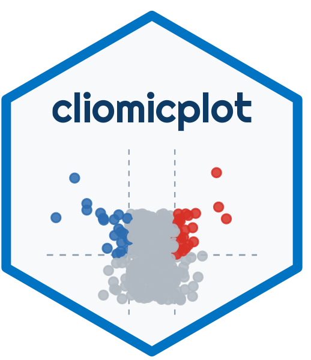

Cross-Network Module Preservation Plot Type
Source:R/stat_module_preservation.R
type_module_preservation.RdGenerates publication-grade module preservation scatter plots displaying composite \(Z_{summary}\) scores against module size. Highlights standard WGCNA thresholds (\(Z = 2\) and \(Z = 10\)) separating non-preserved, moderately preserved, and strongly preserved network modules.
Usage
type_module_preservation(
z_cutoff_low = 2,
z_cutoff_high = 10,
show_labels = TRUE,
show_threshold_labels = TRUE,
point_size = 3.5,
colors = c(Strong = "#1B9E77", Moderate = "#2171B5", None = "#D95F02"),
label_size = 3.2,
xlab = "Module Size (Number of Nodes)",
ylab = expression(italic(Z)[summary] ~ "Preservation Score")
)Arguments
- z_cutoff_low
Numeric threshold for moderate preservation (default 2.0).
- z_cutoff_high
Numeric threshold for strong preservation (default 10.0).
- show_labels
Logical. If TRUE, renders module name labels next to points (default TRUE).
- show_threshold_labels
Logical. If TRUE, displays reference threshold tags (default TRUE).
- point_size
Numeric size of module points (default 3.5).
- colors
Named character vector of colors for preservation status categories:
"Strong","Moderate", and"None".- label_size
Numeric size for text labels (default 3.2).
- xlab, ylab
Axis labels.
Value
A cliplot_type object for use with cliplot.